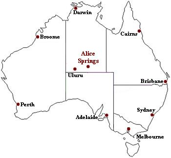

Wereldreis Klimaatgebeiden
(Aardrijkskunde PO)
Droog Klimaat
Voor de volgende deel van de reis gaan we naar Alice Springs, Australië .
Klimaat & Klimaatgrafiek
Alice Springs zit in een Droge Klimaat, omdat het dicht bij de evenaar zit. In een droge klimaat hebben ze hete zomers en wat koelere winters.
Een Klimaat grafiek van Alice Springs
Ligging
Alice Spings zit in de Noordelijke Terrirorium van Australië. Het duurt 1 dag en 4 uur om via Amsterdam naar Alice Springs te vliegen.

Accomodatie
Crowne Plaza Alice Springs Lasseters
Crowne Plaza Alice Springs Lasseters is een 4.5-sterrenhotel. Dit hotel zit dicht bij de vliegveld in Alice Springs. Verblijvers mogen ook gratis gebruik maken van fieten.
Vegetatie
In Alice Spings groeien best wel weinig planten, omdat het een warmer, droger klimaat is. Er zijn een paar bergen in Alice Springs.